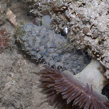
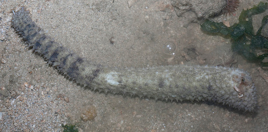
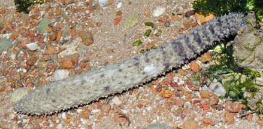
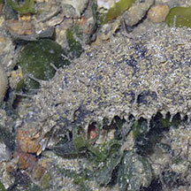
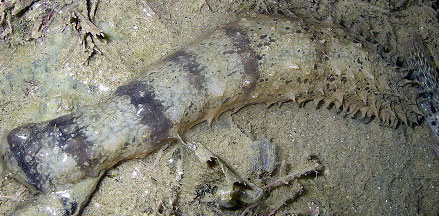

|
|
| sea cucumbers text index | photo index |
| Phylum Echinodermata > Class Holothuroidea |
| Bottleneck
sea cucumber Holothuria impatiens* Family Holothuriidae updated Apr 2020 Where seen? This large tapering sea cucumber is sometimes seen hidden in rubbly areas on some of our shores. Elsewhere, it is found in shallow reefs, hidden under rocks, also in seagrasses and silty environments. As well as up to 30m deep. Holothuria impatiens is considered a species complex which is being untangled at present. Features: 15-25 cm long. Body tough cylindrical. The back end is broader, without markings and usually wedged into a hiding place. The narrower end has the downward facing mouth with 20 feeding tentacles, short white with bushy tips. This narrow end sticks out of hiding and usually has 5 or more dark grey/brown bands. The body has been described as bottle-shaped and rough to the touch. Those seen usually greyish. But elsewhere described as light brown or variegated pink and brown. The body is covered with conical spiky bumps. It has sparse tube feet. When disturbed, it can release from its backside, long thick sticky white cylindrical tubes called Cuvierian tubules. Human uses: This sea cucumber has low commercial value and is harvested by hand and free-diving in some places. |
 Narrow end with the mouth sticking out from hiding. Pulau Sekudu, Jun 14 |
 Pulau Sekudu, Jun 14 |
*Species are difficult to positively identify without close examination.
ID of this sea cucumber needs to be confirmed.
| Bottleneck sea cucumbers on Singapore shores |
On wildsingapore
flickr
|
| Other sightings on Singapore shores |
 Pulau Sekudu, Jun 14 |
 |
 Tanah Merah, May 10 Photo shared by Toh Chay Hoon on flickr. |
Links
|